Table of contents |
Author: Johannes Buchner Homepage: http://astrost.at/istics/ Further information: The Compton-thick growth of Supermassive Black Holes constrainedAbstract: 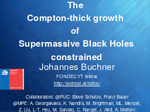 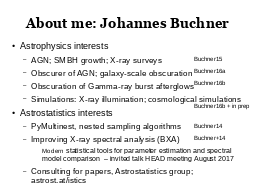 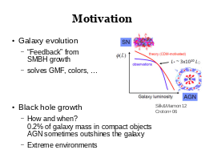 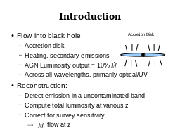
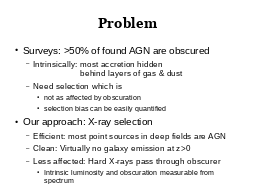
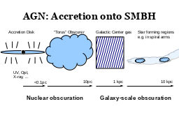
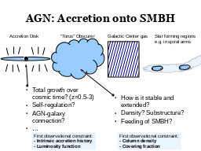
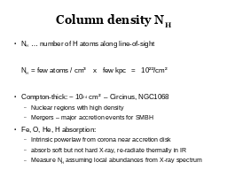
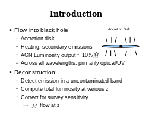
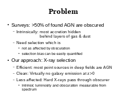
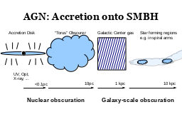
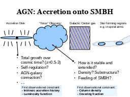
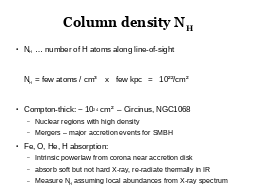
 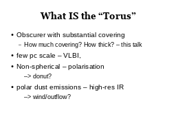
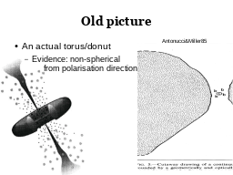
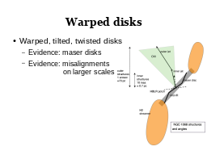
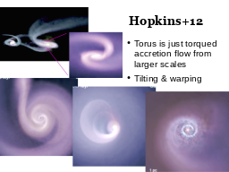
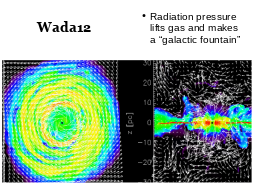
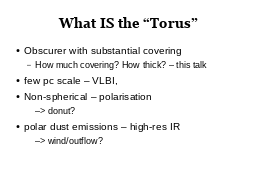
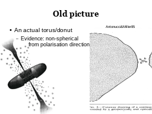
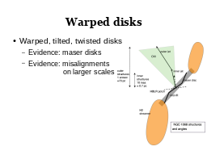
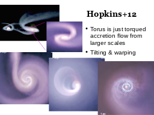
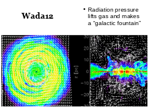
 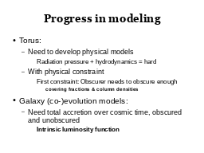
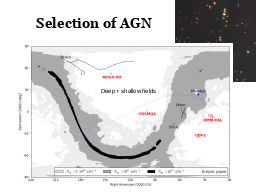
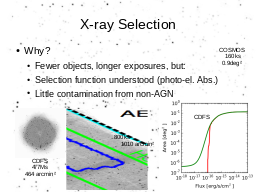
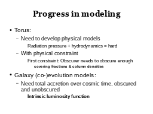
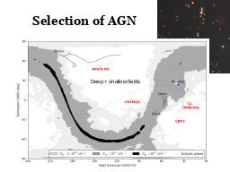
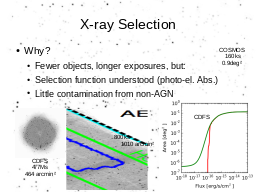
 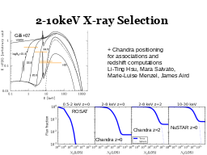
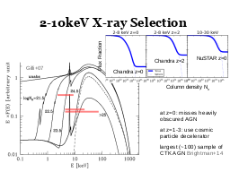
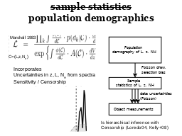
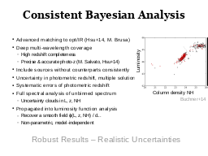
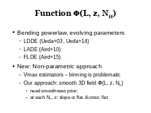
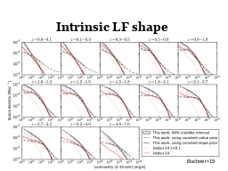
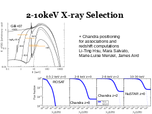
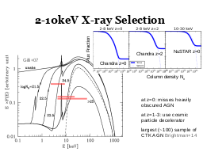
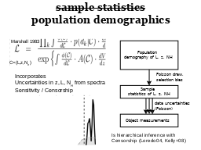
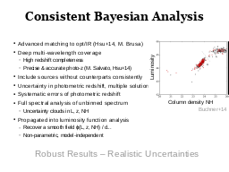
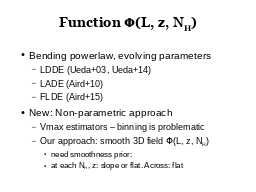
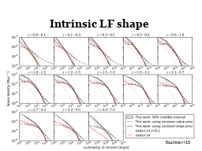
 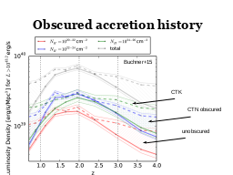
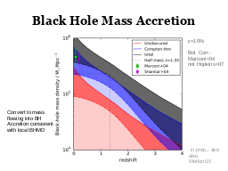
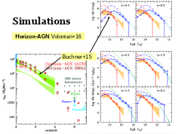
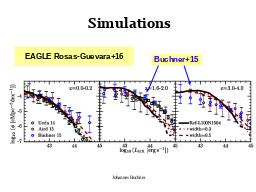
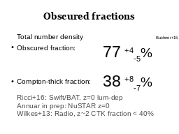
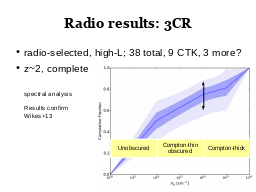
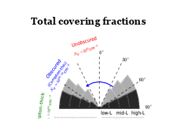
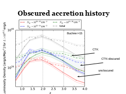
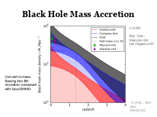
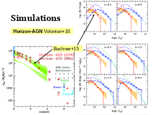
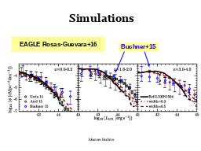
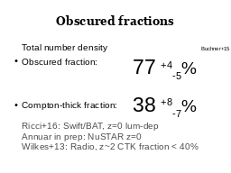
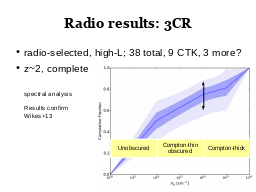
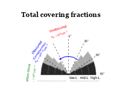
 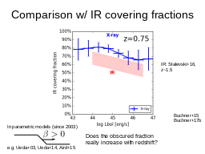
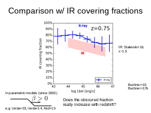


 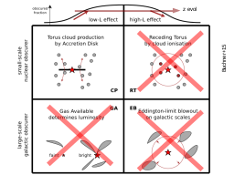
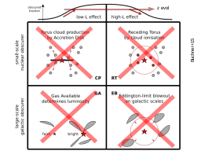
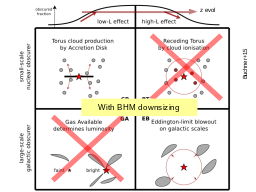
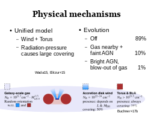
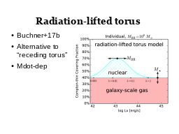
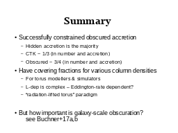
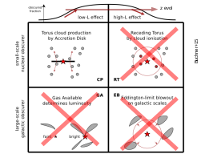
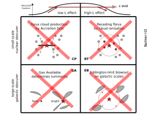
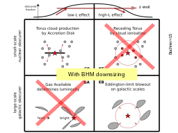
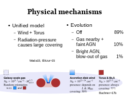
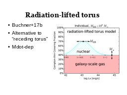
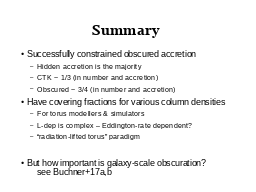
 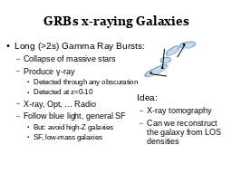
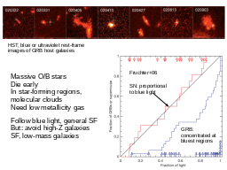
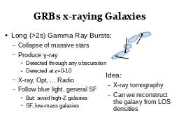
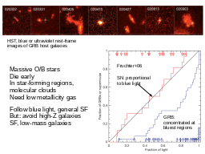

 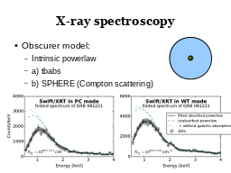
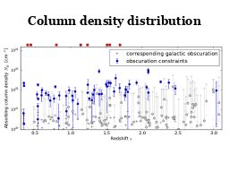
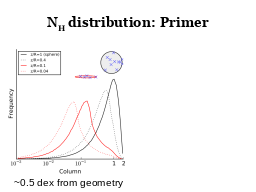
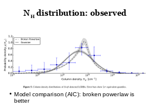
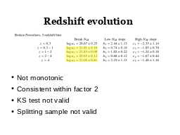
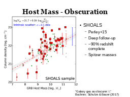
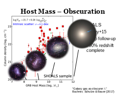
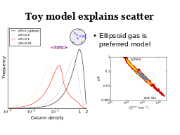
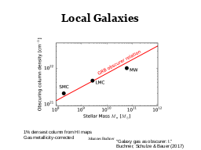
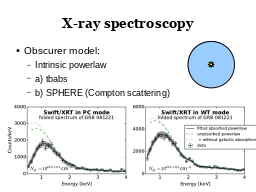
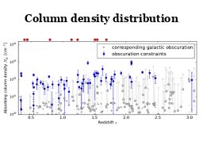
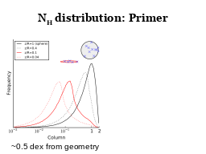
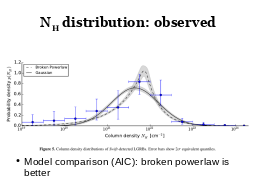
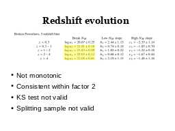
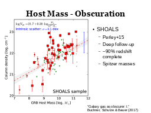
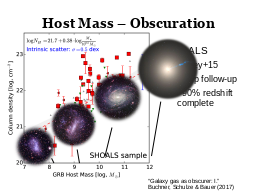
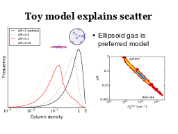
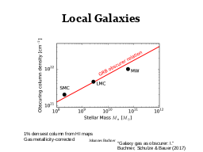
 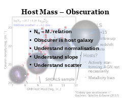
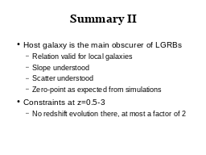
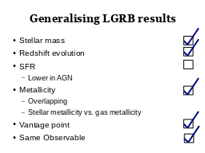
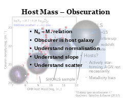
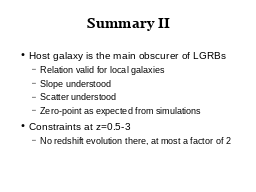
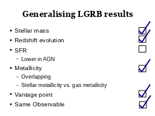

|